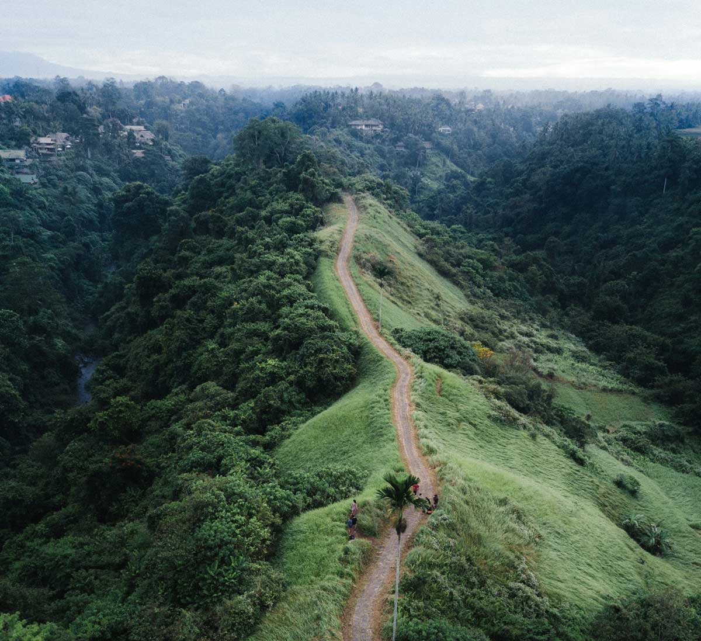
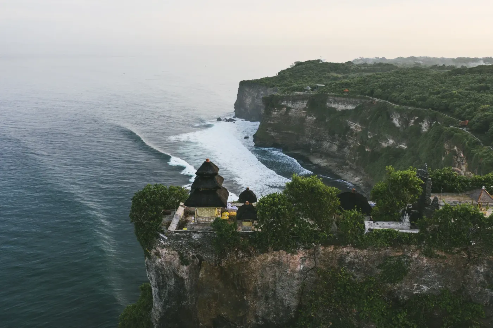
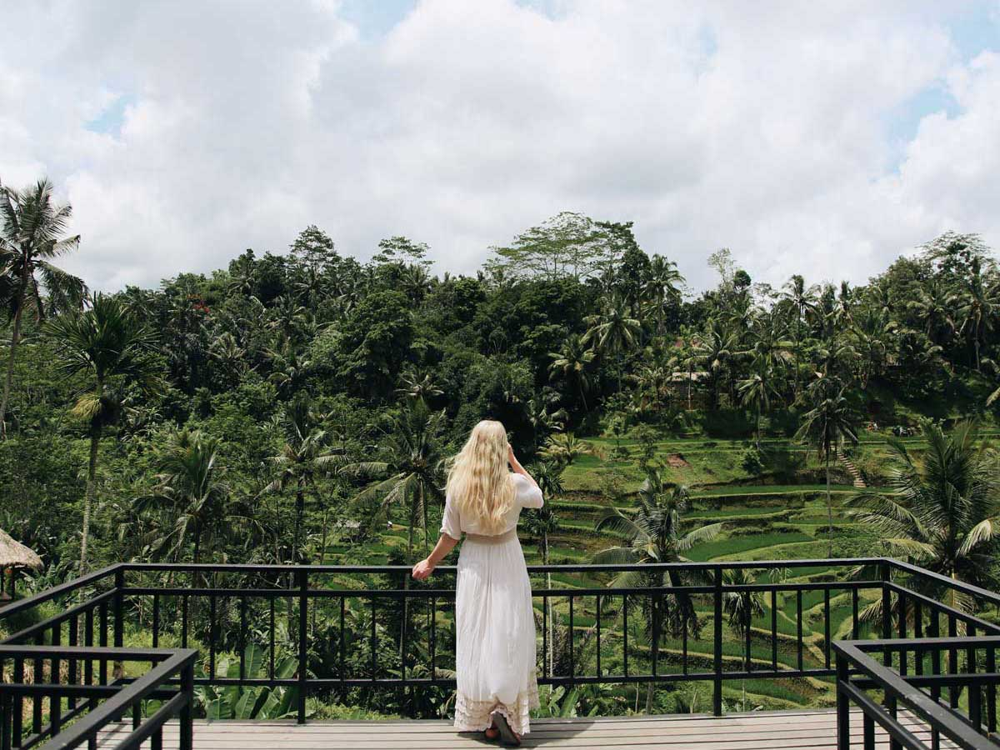
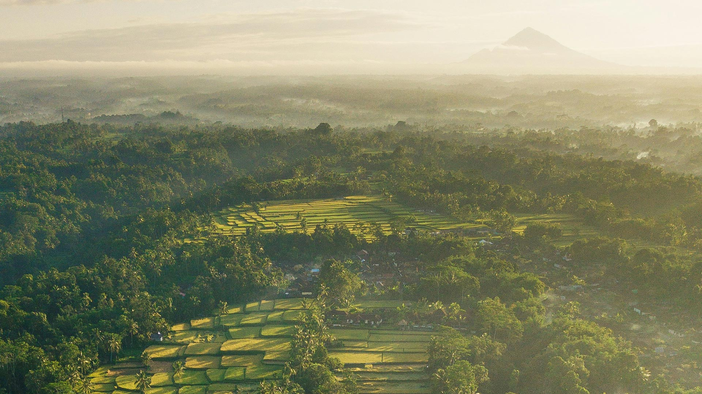
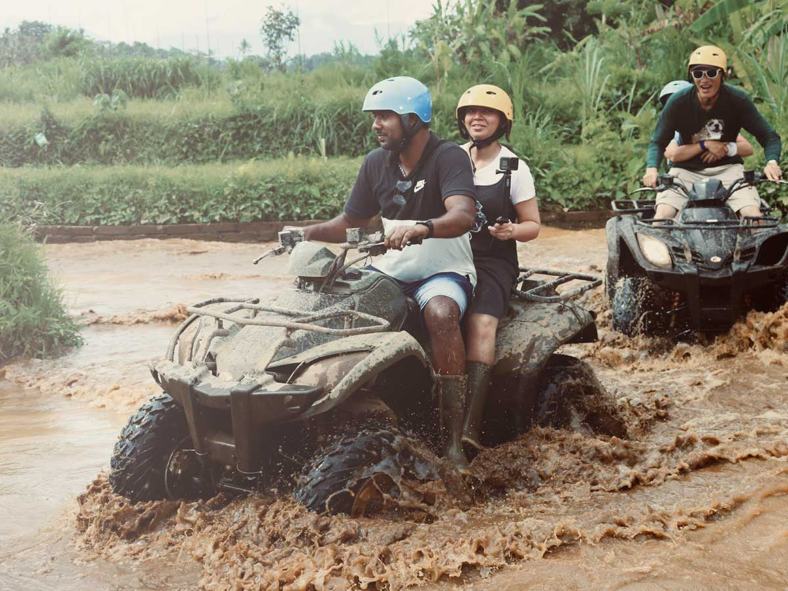

About the Island

Ubud
Bali's cultural heart in the cool green interior - temples, rice terraces, art, and yoga. The best base for day trips across the island.

Canggu
A laid-back coastal district of surf breaks, black-sand beaches, and a buzzing cafe scene. Livelier than Ubud, more relaxed than Kuta.

Uluwatu & the Bukit
Limestone cliffs, famous surf breaks, and a clifftop sunset temple. Home to beaches like Padang Padang and Melasti.
People & Culture
Nature
Volcanoes: Agung & Batur
Sacred Mount Agung and the popular Mount Batur sunrise trek over its caldera and crater lake.

Rice Terraces & Subak
Sculpted green terraces fed by the thousand-year-old subak system - from Tegalalang to vast, quiet Jatiluwih.

Waterfalls of Bali
From the easy-access Tegenungan near Ubud to the wild, multi-tiered Sekumpul in the north.
What to Do

Guided Day Tours
See the highlights the easy way with a local driver-guide - themed routes across Ubud, and East, West, South, and North Bali.

Adventure Activities
ATV rides, white-water rafting, jungle swings, and sunrise volcano treks, all within reach of Ubud.

Beaches & Surf
Where to swim, surf, and catch the sunset - white sand in the south, quieter black sand in the east and north.